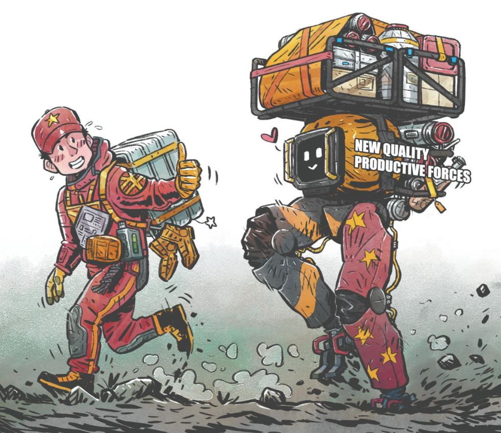

AI, Capitalism, and the Development of the Productive Forces
Commentary - Aubrey Waddle - 8/9/2026

AI, Capitalism, and the Development of the Productive Forces
Like almost everything in economics, I think the development of AI presents a trade-off.
At the 30,000-foot level, under a capitalist incentive structure—what we generally describe as the profit motive—we get extremely rapid development of new productive forces. AI becomes a race between companies to develop a product that can be monetized, while the individuals involved have the additional motivation of becoming extremely wealthy. That process also compounds: the more successful these companies become, the more capital they accumulate to pour back into research and development, allowing innovation to accelerate even further.
The trade-off is that technological development can occur much faster than the regulatory state is capable of responding to it.
This isn't unique to AI. We've seen essentially the same process repeatedly since the Industrial Revolution. The profit motive encourages the rapid development of productive forces, while the regulatory body of the state remains bogged down dealing with the problems already in front of it. The state rarely stops technological development beforehand to determine what problems might emerge. Instead, development proceeds until something goes wrong, and then the state attempts to regulate the problem afterward.
In that sense, regulations are often written in the blood of workers, consumers, or the public.
The opioid epidemic is one example. The development of inexpensive and effective painkillers obviously had enormous medical value. But the profit incentive surrounding those drugs also encouraged aggressive marketing and over-prescription, contributing to a massive public-health crisis.
Climate change provides an even larger example. The Industrial Revolution produced an extraordinary expansion of humanity's productive capacity, largely through fossil fuels. But that development occurred long before an adequate regulatory structure existed to control its environmental consequences. By the time we thoroughly understood the magnitude of anthropogenic climate change, fossil-fuel infrastructure had become deeply embedded throughout the global economy. More than two centuries after the beginning of industrialization, we are still struggling to adequately rein in the environmental consequences of that development.
That's the fundamental contradiction I'm interested in: capitalism can be extraordinarily effective at rapidly developing the productive forces, but that speed can itself become dangerous because the regulatory state is almost inherently reactive. It develops the guardrails after the technology has already been deployed.
And that's what concerns me about AI.
My personal feelings toward AI are actually fairly mundane. I'm excited about its ability to develop the productive forces to a degree we couldn't have imagined even ten or twenty years ago. My concern is: at what cost?
I basically accept that the regulatory state is going to be behind the development of AI. It's not going to be ahead of the curve. It may not even seriously chase the curve until something has already gone wrong.
The question is whether AI produces problems that are reversible once we finally decide to regulate them. Does something horrible have to happen before the state meaningfully intervenes? And, more importantly, could we eventually discover that some of the damage cannot simply be undone?
That's where the comparison with climate change becomes important. The concern isn't merely that regulation comes late. It's that technological development can create path dependencies and accumulated harms that become extraordinarily difficult—and in some cases impossible—to completely reverse.
But that brings me to the other side of the trade-off: would AI have developed this rapidly under a socialist, publicly directed, or more centrally planned system?
Probably not.
Without the capitalist profit motive—without companies racing against each other and individuals pursuing enormous private fortunes—you would probably sacrifice some of the extraordinary speed of development we're seeing today.
But slower does not necessarily mean worse.
There are historical examples demonstrating that technological innovation does not require private profit as its primary motivation. The American space program is an obvious example. During the Kennedy administration and throughout the Cold War space race with the USSR, enormous technological advances emerged from publicly funded research and state-directed investment.
The motivation was different. Instead of firms competing for private profit, states were competing geopolitically and technologically.
Something similar could theoretically happen with AI. We don't necessarily need another empire frightening us into innovation, but even within the geopolitical system that already exists, the United States has an obvious motivation to publicly fund AI research through technological competition with China.
Under that model, AI could still advance, but perhaps more gradually and with regulation incorporated into the development process itself rather than imposed afterward.
That's ultimately the trade-off I see between the two systems.
Under capitalism, technological development is like burning gasoline. The profit motive produces an enormous amount of energy very quickly. Money, competition, accumulation, and greed become the fuel driving the development of productive forces at extraordinary speed. But the regulatory state is constantly chasing behind it, attempting to control the consequences after they emerge.
A more publicly directed or socialist model might be more like a slower diesel burn. You potentially sacrifice some speed because you aren't exploiting the same "money, money, money; greed, greed, greed" incentive structure as fuel. But in exchange, technological development can theoretically occur more deliberately, with public oversight and regulation incorporated as it develops.
So I don't think the question is simply whether capitalism or socialism produces more innovation. The more interesting question is what we're actually optimizing for.
Capitalism may be extraordinarily good at maximizing the speed at which productive forces develop. But speed is only one variable. We also have to consider safety, distribution, democratic control, externalities, and whether society retains the ability to regulate a technology before its consequences become irreversible.
AI may simply be the newest and potentially most consequential version of a trade-off we've been dealing with since the Industrial Revolution.
Conclusion
If you ask me whether I would prefer the capitalist or socialist development of AI, my answer is rooted in the same historical-materialist understanding of capitalism itself. Economic systems have historically developed through stages, with each creating conditions for what comes after it. From that perspective, capitalism's great historical utility has been its extraordinary ability to rapidly develop the productive forces.
I'm therefore comfortable with AI having been developed under a capitalist incentive structure. Since that's the path we've chosen, let capitalism do what it does extraordinarily well: throw gasoline on the development of the productive forces.
But that only works if, at some point, you stop pouring gasoline.
We are rapidly approaching—if we haven't already passed—the point where AI needs substantially greater regulation and more aggressive state direction. The problem is that the United States is currently moving in the opposite direction. The Trump administration has explicitly made removing regulatory barriers and accelerating American AI development central parts of its policy. If capitalist AI development was already burning gasoline, we're now pouring rocket fuel on it at precisely the moment when we ought to be switching to something cooler: a slower, more deliberate, and—ironically—more conservative development of AI.
That's where I begin to question whether allowing AI to develop this far under capitalist incentives was a mistake. The problem isn't necessarily using those incentives to rapidly develop the technology; it's allowing those incentives to continue indefinitely. Rapid capitalist development only makes sense if you're eventually willing to sunset the capitalist incentive structure once its historical purpose has been served.
We've already seen what happens when we don't. Fossil-fuel development contributed enormously to the development of the productive forces, but allowing those incentives to run indefinitely helped produce the climate crisis. Similar dynamics can be seen in financial speculation and the opioid epidemic. At some point, the productive capacity created by capitalism has to be brought under greater social control rather than simply allowed to accelerate forever.
That's ultimately where I land on AI. I'm comfortable having used capitalism to get us here. What worries me is that, at exactly the moment when we should begin easing off the accelerator and bringing AI under substantially greater public control, we're doing the opposite. The problem isn't that we burned gasoline to get here; it's that we don't seem to know when to stop burning it.